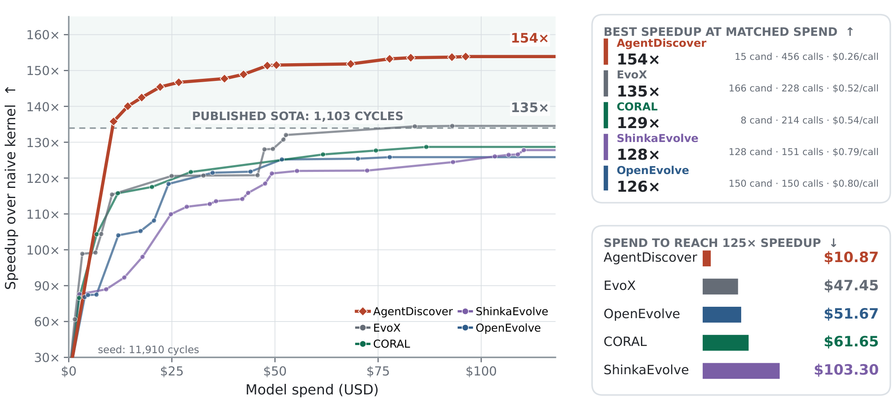

Autonomous Discovery with Minimal Search Scaffolding
Frameworks that use large language models for scientific discovery typically rely on a fixed, human-designed algorithm that decides what the model sees at each step, leaving the model only the role of proposer. The model knows nothing of the search beyond what it is shown. As models grow more capable, a question arises: does a search strategy chosen by a human before the run scale better than promoting the model from proposer to planner and letting it own the search? The Bitter Lesson suggests that choosing the strategy in advance is the kind of hand-designed structure that general methods eventually outscale. We introduce AgentDiscover, in which a coding agent plans the search using its context as working memory, runs experiments, and records every attempt in a database of ideas, candidates, and their relations. This database serves as the agent's long-term memory and is structured so that the selection rules of classical algorithms such as MAP-Elites and Monte Carlo tree search each reduce to a single query, which the agent is free to use, combine, or replace. A server maintains the database and steers the agent after every submission, keeping it on course over long runs. In our experiments, AgentDiscover is more cost-efficient than existing frameworks, reaching better scores at lower cost. It achieves the best result among existing discovery frameworks on the kernel builder task, and on seven past AtCoder heuristic contests its programs would have placed first among human competitors in every contest. On eleven mathematical and systems optimization tasks, it matches or exceeds every baseline that uses the same model.

The preprint is not on arXiv yet; the identifier below will be filled in once it is posted.
@article{farahbakhsh2026agentdiscover,
title = {AgentDiscover: Autonomous Discovery with Minimal Search Scaffolding},
author = {Farahbakhsh, Mahdi and Sela, Ilan and Doudi, Fatemeh and
Kunde, Vishnu Teja and Narayanan, Krishna and
Chamberland, Jean-Francois and Kalathil, Dileep},
journal = {arXiv preprint arXiv:XXXX.XXXXX},
year = {2026}
}